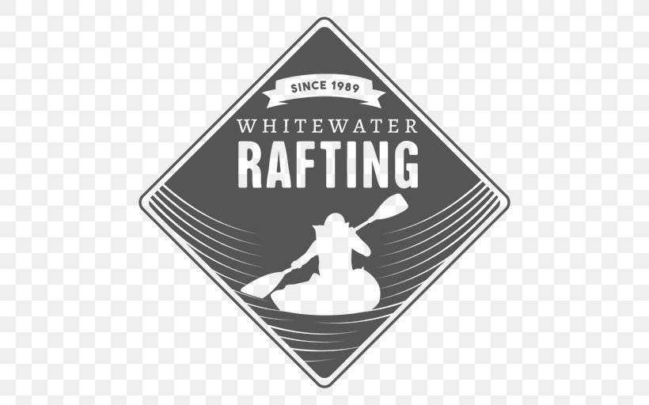

Overview
Purpose
Emerald green streams, rousing waves, and picturesque riverscapes, the outdoor activity of white water rafting is ideal for all nature lovers and (soon-to-be) adventure sports enthusiasts. Rafting requires coordination and team spirit. Those who have already sat in a rubber raft with their companions and fought against the primal force of the water, will certainly not forget this experience any time soon. This is why white-water rafting tours are becoming more and more popular, not only with families and groups of friends but also for team building events and stag and hen parties.
“It took a while to learn the river, but once I did, it felt like I had done it my whole life. That is when I knew that the Ocoee River was my home, or I guess more of a retreat. When I am out there, I am in a state of flow. Even a bad day on the river is better than a good day in most other places. I realized this about halfway through my first summer. That is when I knew.”
Audience
Since very little prior experience is needed, white water rafting is ideal for families and groups with different physical abilities. Depending on the difficulty level of the river, participants should have basic swimming skills. In addition, it is required that all people who want to join a white-water rafting tour are in overall good health. Most rafting providers offer rafting tours at various difficulty levels (easy, medium, challenging). That way, anyone, from beginner to adrenaline junkie, can find the most appropriate white-water rafting tour which suits their wishes and experience. Even families with small children will find suitable rafting tours in most regions. In general, children aged 5 and upwards are allowed on board easier rafting tours with calmer straits.
Rafting is a perfect group activity. The longest rafts can hold up to 20 people, making it easy for large groups of friends to plunge into their white-water rafting adventure together. One of the things that makes white water rafting so much fun is the fact that it really requires people to work together. As such, the sport has, over the years, become a popular choice for team building events for pupils and for work colleagues. The challenge of white water rafting really binds people together, allowing them to make unique and unforgettable memories of their manoeuvres through wild rapids together. Nonetheless, those who are seeking a white-water rafting adventure by themselves or in pairs will also find the right offer with most providers. Beside offers for entire groups, most rafting centers typically offer open tours as well, which, depending on the size of the boat, different numbers of people can take part in. Most white-water rafting tours start with a minimum of 4 participants.
Since white water rafting has different levels of difficulty, most rafting centers offer a broad selection of different types of tours for every occasion. These can be upgraded by booking additional services such as barbecues. Because of these special offers, white water rafting tours are becoming increasingly popular activities for stag or hen parties. Some providers even incorporate fun games and costumes into these types of rafting tours. After an adventurous afternoon on the white-water river, the bride/groom-to-be can enjoy a relaxed evening with their friends by having a barbecue or a few drinks at the base camps own bar.
Branding
Website Logo
Style Guide
Color Palette
Palette URL:
https://coolors.co/161925-23395b-406e8e-d4dcff-e8db7d| Primary | Secondary | Accent 1 | Accent 2 |
|---|---|---|---|
| 23395b | 161925 | 406e8e | e8db7d |
Typography
Heading Font: Rock Salt
Paragraph Font: Roboto
Normal paragraph example
The best Whitewater Rafting in Colorado, White Water Rafting Company offers rafting on the Colorado and Roaring Fork Rivers in Glenwood Springs. Since 1974, we have been family owned and operated, rafting the Shoshone section of Glenwood Canyon and beyond.
Colored paragraph example
Trips vary from mild and great for families, to trips exclusively for physically fit and experienced rafters. No matter what type of river adventures you are seeking, White Water Rafting Company can make it happen for you.
Navigation
Site Map
Wireframes
Home